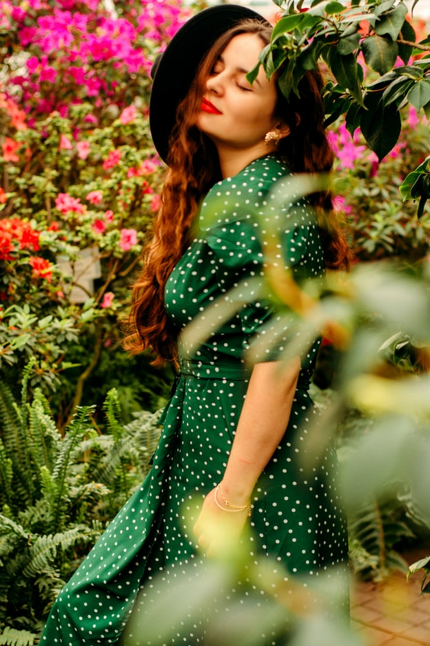

Packing well is less about taking fewer things and more about making every piece participate. A useful travel wardrobe starts with the rhythm of the trip, not a generic checklist.
1. Start with the week
Write down the moments that actually need clothes: the travel day, long walks, a dinner, a meeting, time by the water. When the schedule is visible, duplicate outfits and “just in case” pieces become easier to spot.
Choose garments that can move between at least two of those moments. A soft shirt can be worn open over a tank during the day and buttoned under a jacket at night.
1.1 Choose a palette
Pick two grounding colors and one accent. The point is not to make everything neutral; it is to make every top work with every bottom. Navy, warm white and a clear red create more range than five unrelated colors.
Good packing is a system of relationships. Every new piece should create more than one new outfit.
1.2 Find the anchor
Start with the item you most want to wear. It might be a printed dress, a light jacket or a favorite pair of trousers. Let that piece define the weight, color and attitude of everything around it.

2. The twelve-piece formula
For a seven-day trip, try four tops, three bottoms, two layers, one dress or matching set and two pairs of shoes. Underwear, sleepwear and active equipment sit outside the count.
- Four tops with distinct necklines or textures
- Three bottoms that share the same shoe options
- Two layers with different levels of polish
- One expressive one-piece option
- Two pairs of shoes you can genuinely walk in
2.1 Build useful layers
A layer earns its place when it changes the formality or temperature range of several outfits. A chore jacket and a fine cardigan do different jobs; two nearly identical overshirts do not.
3. Finish with intent
Accessories take little space but should still be edited. One belt, a soft scarf and a compact bag can shift the same base outfit without creating clutter. Leave a little room in the case—the best travel wardrobes can absorb something discovered along the way.